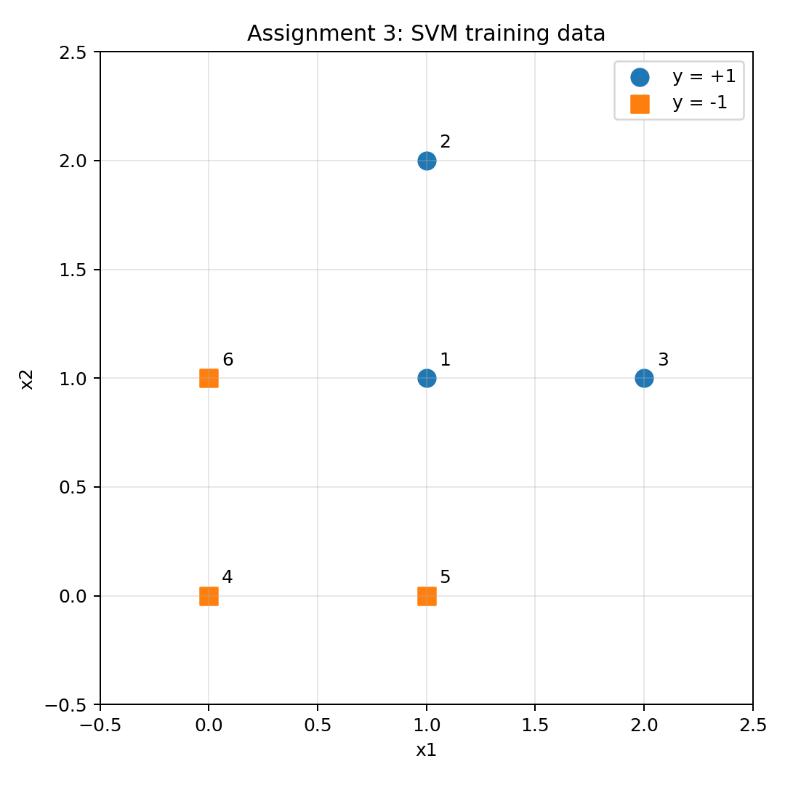
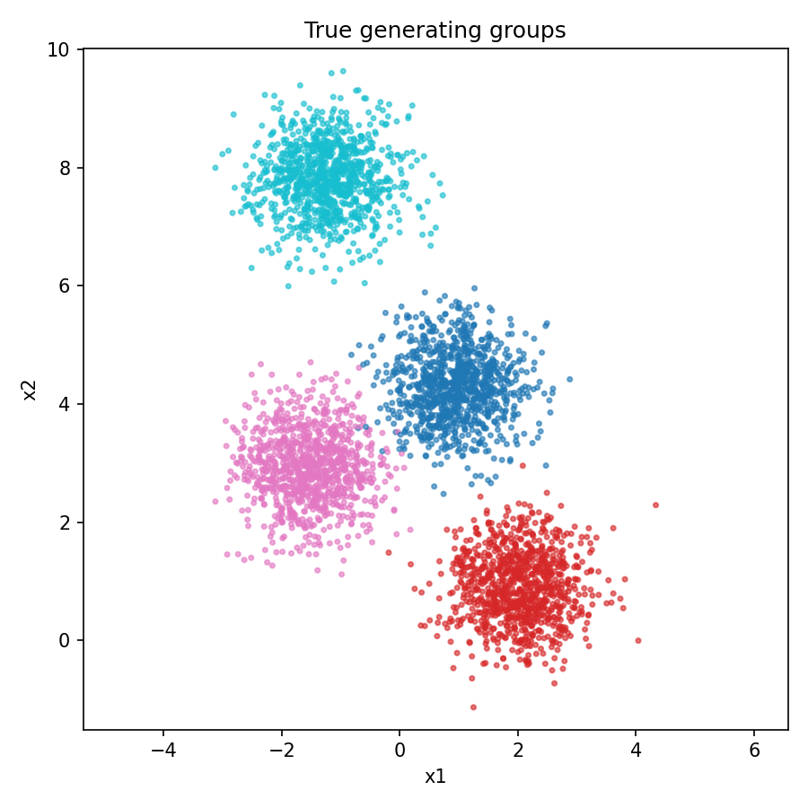
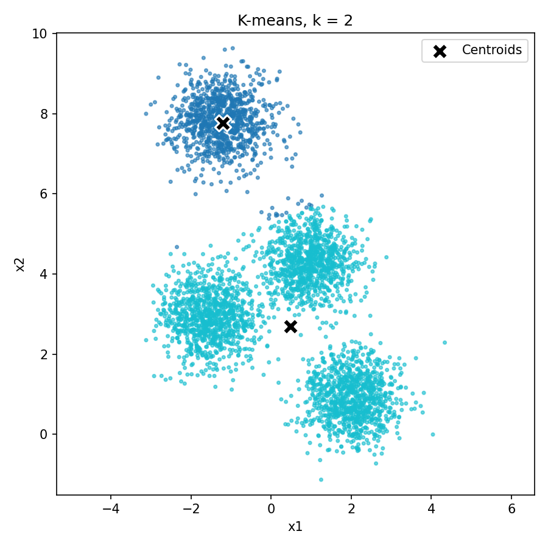
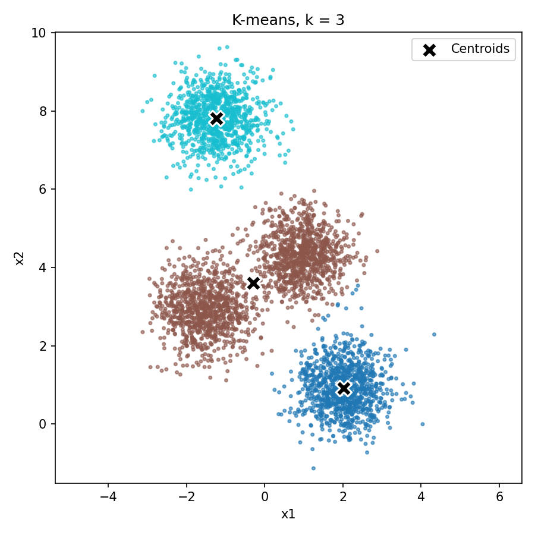
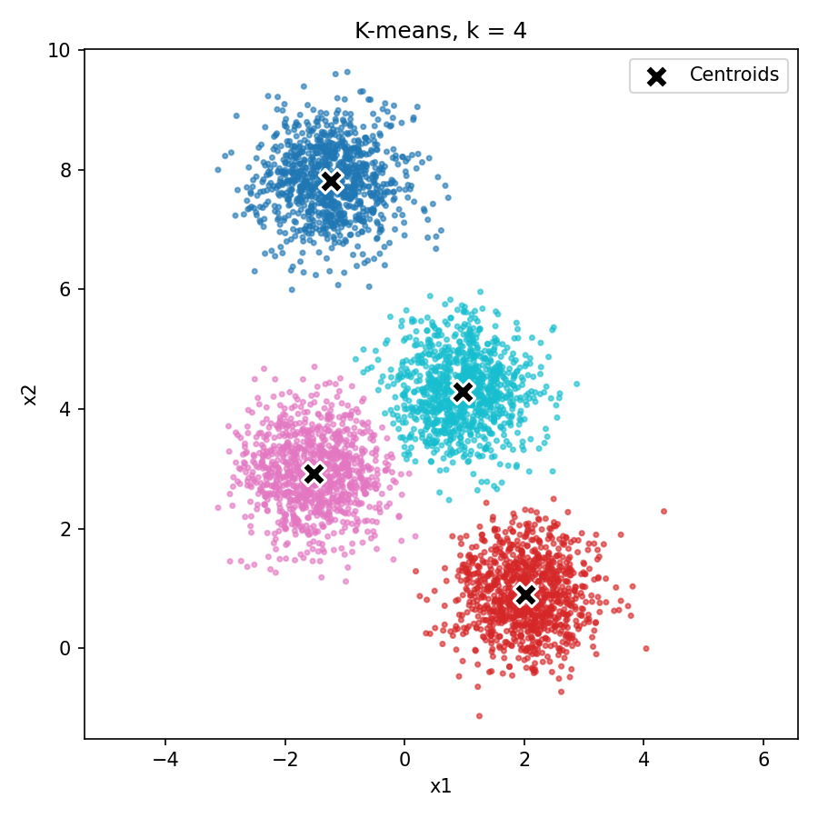
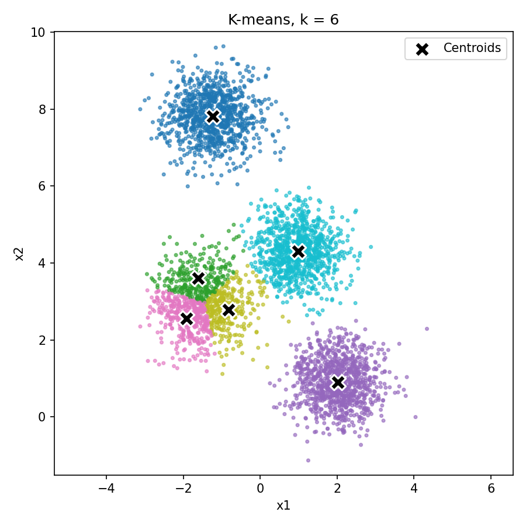
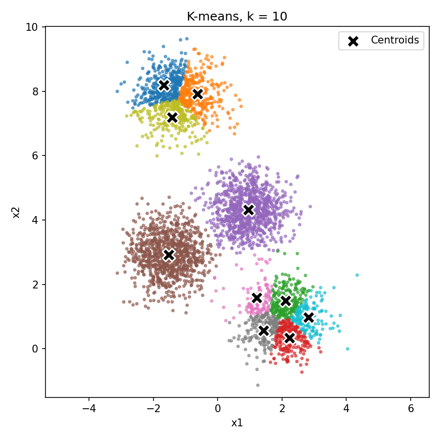

In a hard-margin SVM, the support vectors are the training points that lie exactly on the margin, closest to the decision boundary. Only these points determine where the boundary goes; any other point could be moved or removed, as long as it stays outside the margin, without changing the solution.
By inspection, the support vectors are points 1, 5, and 6. Point 1 at (1, 1) is the positive point closest to the negative class. Points 5 at (1, 0) and 6 at (0, 1) are the negative points closest to point 1, each at distance 1. The gap between the classes is limited both vertically (point 1 vs. point 5) and horizontally (point 1 vs. point 6), so the boundary must run diagonally between them. Points 5 and 6 lie on the line x1 + x2 = 1, and point 1 lies on the parallel line x1 + x2 = 2. Points 2, 3, and 4 sit farther from this gap, so they do not affect the boundary.
For a linear hard-margin SVM, the support vectors satisfy w · xi + b = yi, that is, +1 for positive support vectors and −1 for negative ones. Writing this out for the three support vectors:
| Point | x | y | Equation |
|---|---|---|---|
| 1 | (1, 1) | +1 | w1 + w2 + b = 1 |
| 5 | (1, 0) | −1 | w1 + b = −1 |
| 6 | (0, 1) | −1 | w2 + b = −1 |
Subtracting the second equation from the first gives w2 = 2. Subtracting the third from the first gives w1 = 2. Substituting into the second gives 2 + b = −1, so b = −3. The maximum-margin separating line is
2x1 + 2x2 − 3 = 0 (equivalently, x1 + x2 = 1.5)
As a check, every training point must satisfy yi(w · xi + b) ≥ 1:
| Point | 1 | 2 | 3 | 4 | 5 | 6 |
|---|---|---|---|---|---|---|
| w · x + b | 1 | 3 | 3 | −3 | −1 | −1 |
| y(w · x + b) | 1 | 3 | 3 | 3 | 1 | 1 |
All constraints hold, and they are tight (equal to 1) only for points 1, 5, and 6, which confirms the choice of support vectors in part (a). The code solves the same 3 × 3 system with NumPy, and a library linear SVM with a very large C (approximating a hard margin) recovers the same w, b, and support vectors.
The geometric margin is the distance from the decision boundary to the closest training points:
margin = 1 / ‖w‖ = 1 / √(2² + 2²) = 1 / (2√2) = √2 / 4 ≈ 0.354
Separately, the full width between the two supporting lines (x1 + x2 = 1 and x1 + x2 = 2) is 2 / ‖w‖ = 1 / √2 ≈ 0.707.
The assignment step computes the squared Euclidean distance between every point and every centroid, and assigns each point to the centroid with the smallest distance. Squared distance gives the same ranking as Euclidean distance and avoids an unnecessary square root. If a point is equally distant from two or more centroids, it is assigned to the one with the lowest centroid index; this follows from NumPy's argmin, which returns the first minimum.
The update step replaces each centroid with the mean of the points currently assigned to it. If a cluster receives no points, it keeps its previous centroid. This matters because the provided initializer samples data rows with replacement, so two initial centroids can be identical; under the tie rule above, every point then goes to the lower-indexed copy and the other cluster is empty. Keeping its old centroid avoids a division by zero and leaves the cluster available to pick up points in later iterations. The update returns a new array rather than modifying the input centroids.
The data come from make_blobs(n_samples=4000, centers=4, cluster_std=0.60, random_state=0). K-means was run for k = 2, 3, 4, 6, and 10 with 100 iterations each, using a single NumPy generator seeded with 0 for initialization. The true blob labels were not used during clustering; they appear only in the reference plot.






Figure 2. Cluster assignments (colors) and final centroids (black X) for each k, with the true groups for reference.
| k | Cluster sizes |
|---|---|
| 2 | 1017, 2983 |
| 3 | 1008, 1992, 1000 |
| 4 | 1000, 998, 1002, 1000 |
| 6 | 1000, 299, 997, 407, 319, 978 |
| 10 | 365, 350, 253, 261, 988, 997, 123, 213, 285, 165 |
When k is smaller than the number of generating groups, K-means has to merge groups. With k = 2, the isolated top blob forms one cluster and the remaining three blobs share the other, with a centroid that falls in the empty space between them. With k = 3, the top and lower-right blobs are recovered, while the two middle blobs are merged. At k = 4, the clusters match the four generating groups almost exactly, with sizes of roughly 1000 each. When k is larger than four, K-means splits real groups: at k = 6 the left blob is divided into three pieces, and at k = 10 several blobs are cut into fragments of 100–400 points. These extra boundaries are artifacts of where the initial centroids happened to land rather than real structure in the data. Increasing k always lowers the total within-cluster distance, but beyond k = 4 that decrease comes from cutting up compact groups, not from finding new ones.
One training set and one independent test set were generated, each with 1,000 positive examples from N((1, 1), I) and 1,000 negative examples from N((−1, −1), 3I). The splits were held fixed, and label corruption and training were repeated for 20 trials using a NumPy generator seeded with 0. Every classifier is an RBF SVM with C = 1 and γ = 0.01, evaluated on the clean test labels.
Each training label is flipped independently, with probability 0.35 if its original label is positive and 0.20 if it is negative. The flip probability is chosen from the original label and each example receives a single random draw, so no label can be flipped twice. Across the 20 trials, the baseline SVM trained on the noisy labels reached a mean test accuracy of 0.8280 (standard deviation 0.018, range 0.784–0.847).
For each training point, the method finds its five nearest other training points by Euclidean distance and replaces the point's label with the majority of their noisy labels. All repaired labels are computed from the same original noisy-label array, so the result does not depend on row order. A point is excluded from its own neighborhood by setting its self-distance to infinity, and ties in distance are broken in favor of the lower row index using a stable sort. Five binary votes cannot tie. The method uses only training features and noisy training labels. A fresh SVM with the same parameters is then trained on the repaired labels.
| Method | Mean accuracy | Std. dev. | Min | Max |
|---|---|---|---|---|
| Baseline (noisy labels) | 0.8280 | 0.018 | 0.784 | 0.847 |
| K-NN repair | 0.8644 | 0.010 | 0.834 | 0.873 |
| Difference | +0.0364 | +0.018 | +0.071 |
K-NN repair improved accuracy by 3.64 percentage points on average and was better than the baseline in all 20 trials. It also made results more stable, roughly halving the trial-to-trial standard deviation. Per-trial results are in the attached noise_comparison.csv.
Surprisingly, the repair did not reduce the overall amount of label noise. A supplementary analysis (q3_diagnostics.py, which reproduces the same 20 trials and uses the clean training labels only to measure label quality) shows the training-label error rate was 27.0% before repair and 27.3% after. What the repair changed is where the errors are. Away from the region where the two classes overlap, a wrong label is usually outvoted by correct neighbors, so labels there became cleaner. Inside the overlap, neighbors are mixed, and the vote is close to a coin flip.
| Training labels | Label error | Test points predicted positive | Positives missed | Negatives misclassified |
|---|---|---|---|---|
| Noisy | 27.0% | 43.9% | 23.3% | 11.2% |
| Repaired | 27.3% | 50.9% | 12.6% | 14.5% |
The main source of the improvement is that the repair removed a bias in the baseline. Because positive labels are flipped more often than negative ones (35% vs. 20%), the noisy training set contains many negative-labeled points inside positive territory. These pull the baseline boundary toward the positive class, so it predicts positive for only 43.9% of test points even though half of them are positive, and it misses 23.3% of the positives. After repair, those scattered negative labels deep in positive territory are mostly voted back, and the classifier's predictions become balanced (50.9% positive). It trades a small increase in false positives for a large decrease in missed positives. For reference, an SVM trained on the clean labels reaches 0.867, and the Bayes-optimal classifier reaches 0.871, so the repaired SVM's 0.864 is close to the best achievable on this data.
K-NN repair is not guaranteed to help. It works here because the noise is random and spread throughout the data while the true labels are spatially smooth, so a point's neighbors are a good estimate of its correct label. It can hurt when the noise is clustered, so that a whole neighborhood is mislabeled together; near the class boundary, where it overwrites correct labels with the local majority; for small or thin classes, which can be voted away by a surrounding larger class; and when the features are not meaningful for Euclidean distance.
I used Claude (Anthropic), an AI assistant, for this assignment. It wrote the code for all three questions, derived the SVM boundary and margin, wrote a test suite and a supplementary analysis script for Question 3, and drafted this write-up. I reviewed, ran, and verified the code and results. A transcript of the session is attached.
Files submitted: assignment3_template.py, kmeans_template.py, noisy_classification_template.py, noise_comparison.csv, this PDF, and the AI session transcript. Supplementary: q3_diagnostics.py, test_assignment3.py.